Project 3: [Auto]Stitching and Photo Mosaics
Part A
A.1 Shoot the Pictures
Grimes 1
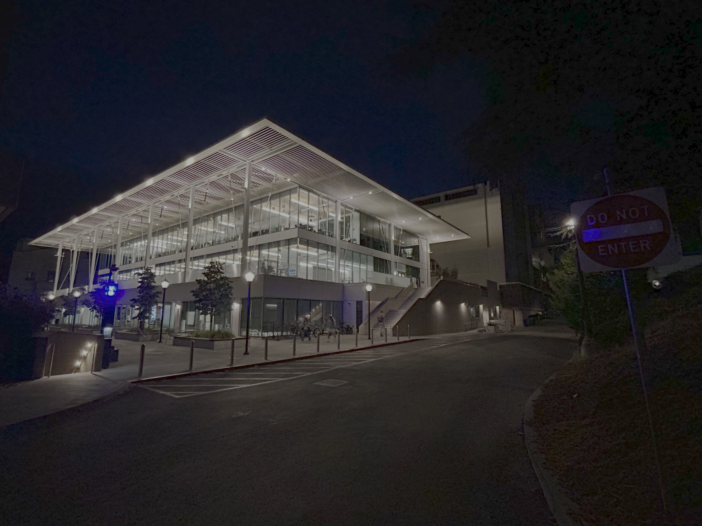
Taken at the Grimes Engineering Center to the left (with a lamppost in frame)
Grimes 2
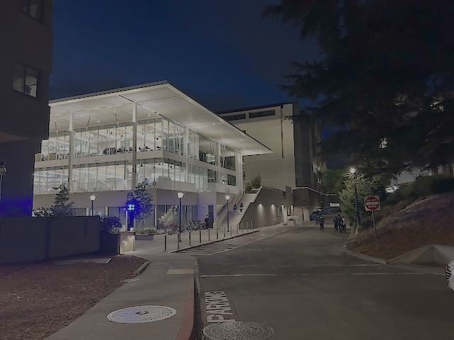
Taken at the Grimes Engineering Center to the right showing more of the driveway
Inside Grimes 1
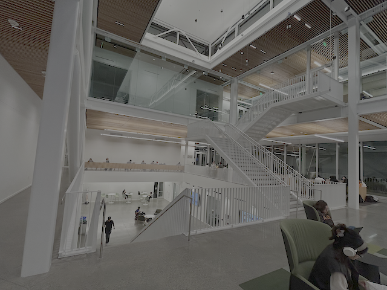
Taken on an upper floor at Grimes, featuring more of the staircase
Inside Grimes 2
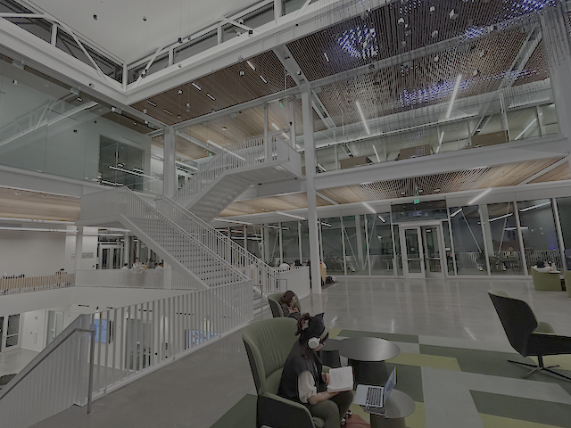
Taken on an upper floor at Grimes, with more of the seating in view
I took these photos with the help of my friend and a tripod so that we could minimize any movement that could potentially change the center of projection (COP) and thereby only rotate the camera!
A.2 Recover Homographies
To set up the system of equations for recovering the unknown homography matrix, I first wrote the given terms we have (im1_pts, im2_pts as the x, y coordinates from our 2 images) in the form of Ah = b. Here, it was particularly important for me to remember that the vector h only has 8 unknowns and not 9, since there are 8 degrees of freedom in this transformation. From there, if we multiply both the known and unknown terms, and then divide by our third coordinate as seen in the steps that I took in the image below, then we have two equations of x' and y'. However, we can rewrite this further by multiplying both sides of both equations and then expanding the left-hand-side (LHS). Finally, we're left with a system of linear equations to solve for the unknown h vector.
Homography Equations
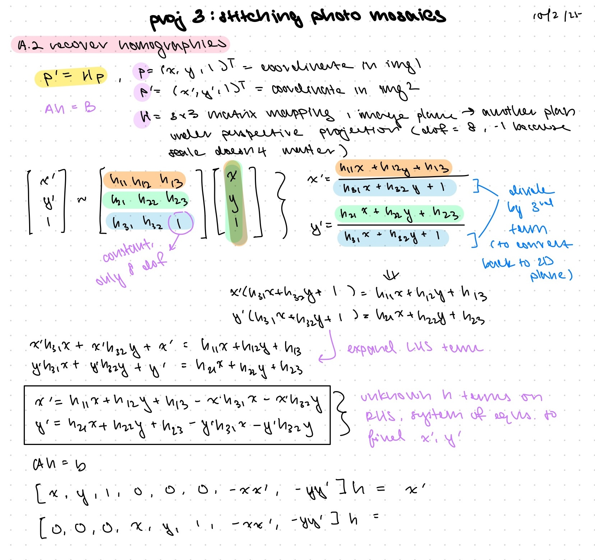
How I derived the system of equations used for recovering our homography matrix
Grimes
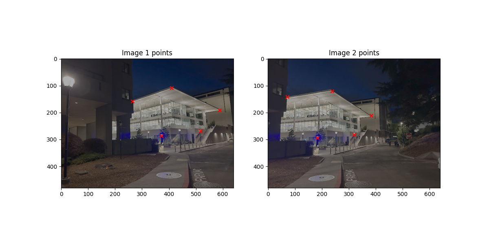
Correspondences (5 points) visualized on Grimes images
Grimes Recovered Homography
Inside Grimes
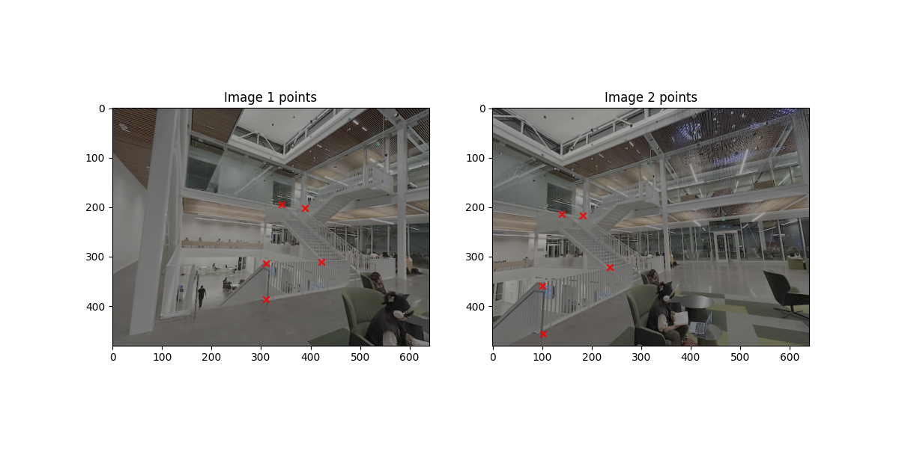
Correspondences (5 points) visualized on Grimes images from indoors
Inside Grimes Recovered Homography
A.3 Warp the Images
Now that we've recovered our homography matrix, we can apply the homography to warp our input images. We tried 2 interpolation methods: nearest neighbor and bilinear interpolation. Whereas nearest neighbor interpolation will round coordinates to the nearest pixel value, bilinear interpolation will use a weighted average from the 4 nearest pixels.
The tips from staff included in our project spec were very helpful! In order to handle predicting the bounding box for the resulting warped image, I implemented a helper function that essentially applied the homography transformation to each of the 4 corners of the input image, and then took the minimum and maximum x and y values to basically serve as a container with dimensions to fit the output warped image. From there, I called this helper function to compute the output bounds in both nearest neighbor and bilinear interpolation. My process involved looping through each coordinate within the bounds of the output image dimensions (computed by our helper) and then mapping that coordinate back into the source image by using the inverse of the homography matrix.
For nearest neighbor interpolation, the source coordinates were rounded to the nearest integer to find the nearest neighbor pixel value, and then that value was assigned to the output pixel. However, for bilinear interpolation, I used the floor and ceiling method on the source coordinates to find the 4 closest pixels. Then, I subtracted these coordinates from the source coordinates to find the distance between, and use this distance to weight the pixel values and take a weighted average first of the top two pixels, then the bottom two pixels, and then finally between the top and bottom averages to get the final weighted average pixel value to assign to the output pixel.
When it comes to comparing quality and speed, nearest neighbor interpolation ran faster than bilinear interpolation, but as seen in my images below (may need to zoom in a bit!), bilinear interpolation tended to produce a more smooth warping in tradeoff for speed. When testing my code by trying image rectification, nearest neighbor interpolation took around 5.6s whereas bilinear interpolation took around 9s on my image of a poke bowl, and likewise nearest neighbor vs. bilinear interpolation ran for 13.1s vs. 21.6s for my image of bagels.
Warped Poke Bowl
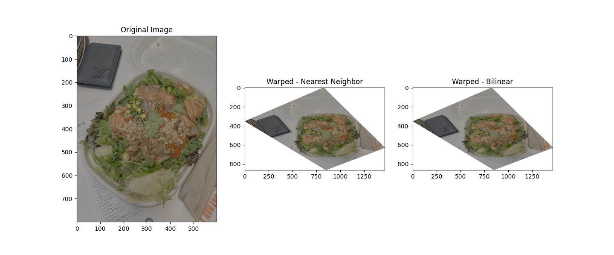
Comparison of nearest neighbor vs. bilinear interpolation on a poke bowl
Warped Bagel
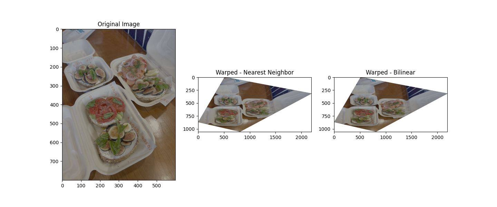
Comparison of nearest neighbor vs. bilinear interpolation on bagels
A.4 Blend the Images into a Mosaic
To create an image mosaic, I tried implementing the one-shot procedure by warping all images at once. However, I realized I had to modify my bilinear interpolation function to handle the entire output shape of the mosaic, rather than try to combine and blend images without knowing the dimensions of the output. I also tried using vectorized operations in this modified function to speed up the process of warping each image to the output mosaic shape.
Next, I used the homography matrix and a translation matrix to warp each image to the correct position in the output mosaic. From there, I could warp the first image with just the translation transformation, and then warp the second image onto the output by combining the homography and translation transformations. To handle blending, I took a weighted average of the two images based on distance from the edge of each image, so that pixels closer to the edge would have a lower weight and pixels closer to the center would have a higher weight. This helped to smooth out edge artifacts, as seen in the mosaics below!
I had a lot of fun going around campus taking pictures of iconic landmarks at Berkeley (not pictured, Campanile shots) as well as exploring my photos from previous travels like my trip to Banff and Jasper National Park in Canada this summer!
Grimes 1
Source image 1 of Grimes Engineering Center
Grimes 2
Source image 2 of Grimes
Grimes Mosaic
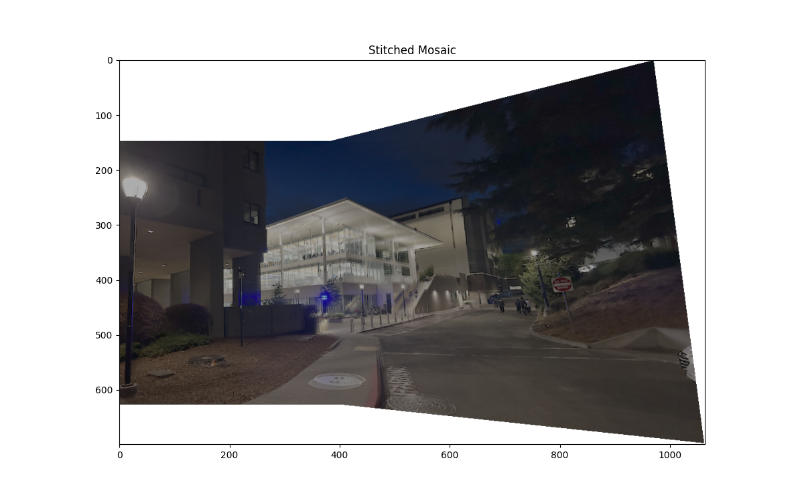
Mosaic of Grimes
Inside Grimes 1
Source image 1 of inside Grimes
Inside Grimes 2
Source image 2 of inside Grimes
Inside Grimes Mosaic
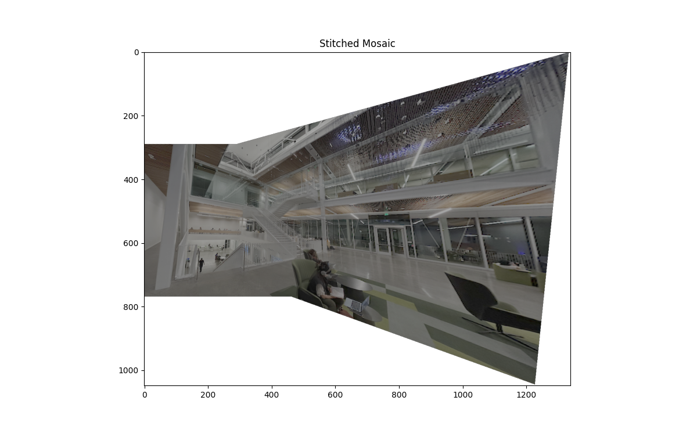
Mosaic of Inside Grimes
Skywalk 1
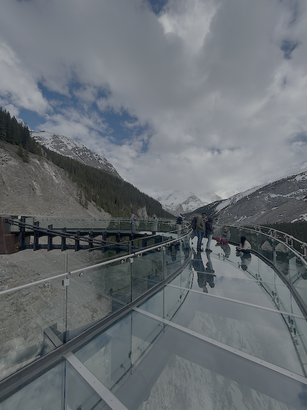
Source image 1 of the Skywalk at Jasper National Park
Skywalk 2
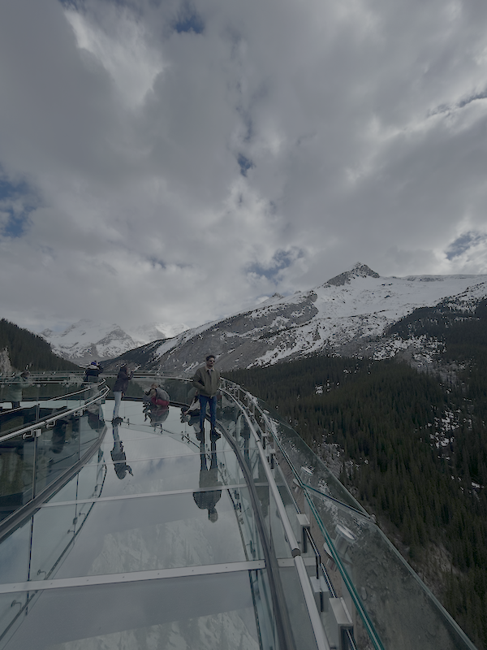
Source image 2 of the Skywalk at Jasper National Park
Skywalk Mosaic
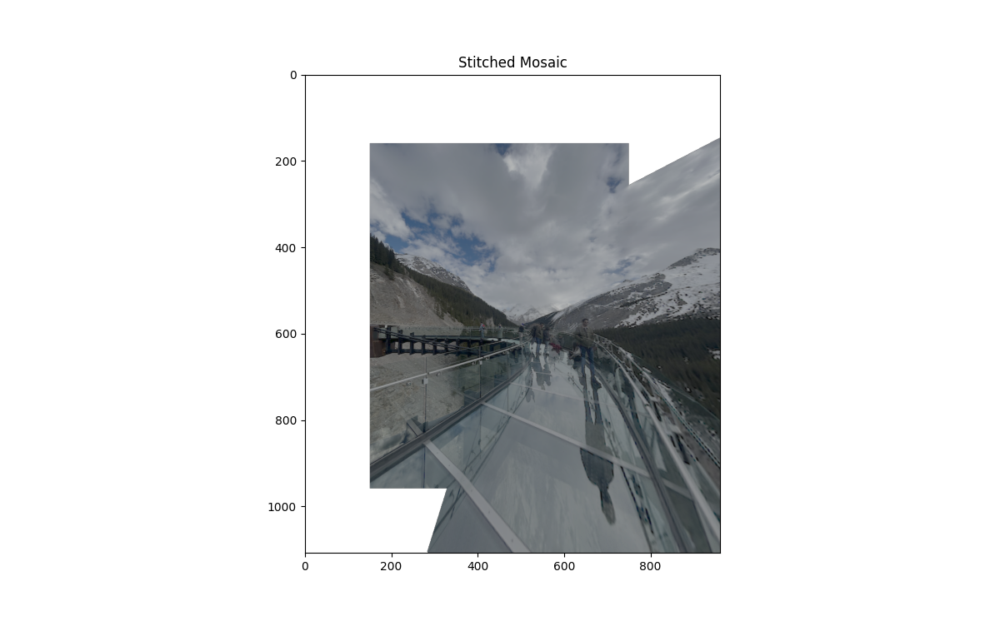
Mosaic of the Skywalk (a glass floor observation platform!)
Part B
B.1 Harris Corner Detection
To obtain the Harris corners for my images, I ran the sample code provided in our project spec and then ran get_harris_corners() on my input images. To visualize the corners overlaid on the image, I plotted the Harris corner coordinates as a scatterplot over the image. I decided to try this on my image sets of the Grimes Engineering Center, the Campanile, as well as a vertical shot I took of the World Trade Center (WTC) in NYC! When run on my images below, many corners were initially detected, with almost the entire space of the image being seemingly filled with corners.
Grimes Harris Corners
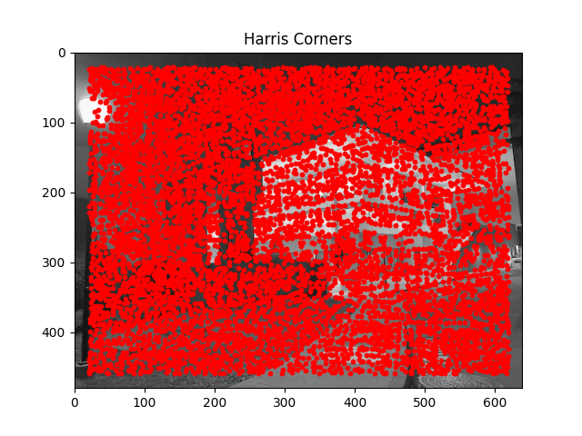
Harris corners detected on an image of Grimes
Campanile Harris Corners
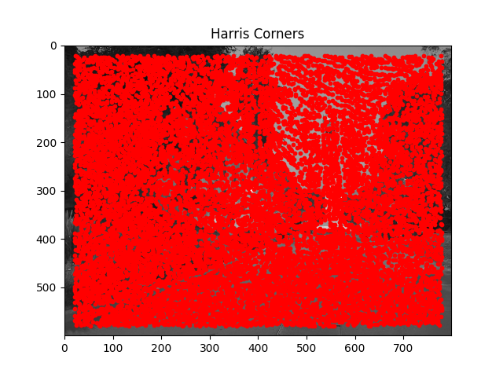
Harris corners detected on an image of the Campanile
World Trade Center (WTC) Harris Corners
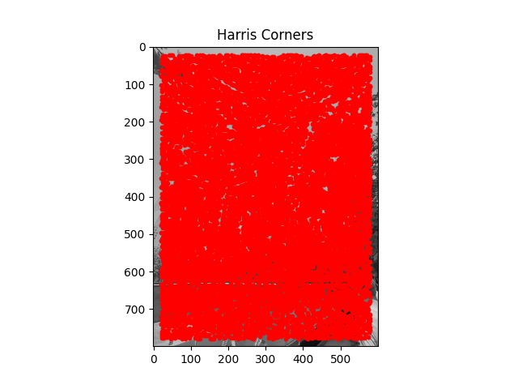
Harris corners detected on an image of the WTC!
However, Adaptive Non-Maximal Suppression (ANMS) was very helpful in narrowing down corners of interest from Harris corner detection. To implement ANMS, I followed the MOPS paper in initializing a suppression radius to compare corners to other corners. First, I retrieved the corner strength values for each corner, and then for each corner, I looped through all other corners to check if a corner was potentially stronger than the current corner, and then computed the radius between the two corners. If the radius was larger than the current suppression radius, then the larger suppressionr radius becomes the new radius. After completing the loop, we can take the top N corners (I believe the paper chose 500) with the largest suppression radius.
Grimes ANMS Corners
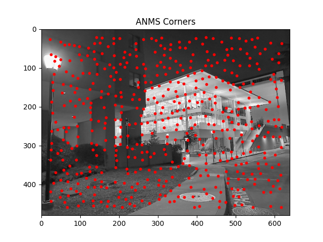
ANMS corners detected on an image of Grimes
Campanile ANMS Corners
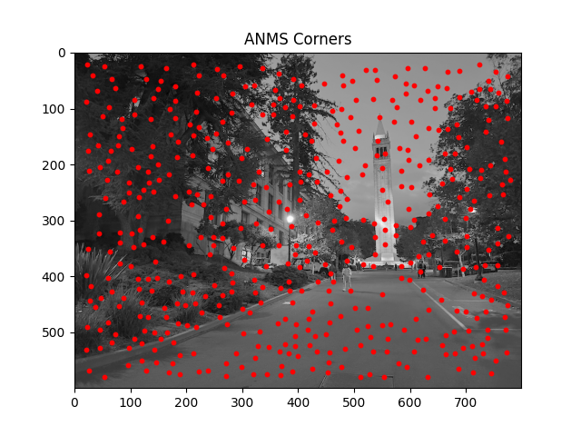
ANMS corners detected on an image of the Campanile
World Trade Center (WTC) ANMS Corners
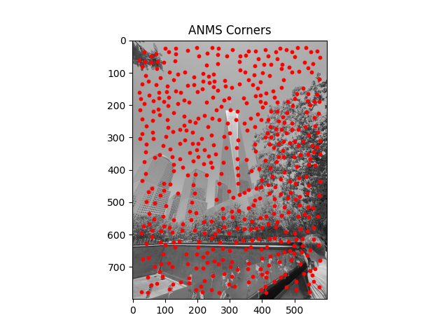
ANMS corners detected on an image of the WTC!
B.2 Feature Descriptor Extraction
To implement feature descriptor extraction, I first sampled from a 40x40 window, but skipped over points that were too close to the edge of the image. From there, I resized down to 8x8 windows to extract patches in these dimensions. I then normalized the patches by subtracting the mean and dividing by the standard deviation. Finally, I flattened these patches into length = 64 vectors to serve as our feature descriptors. Below I include 15 extracted feature descriptors for each of the below images.
Grimes Feature Descriptors
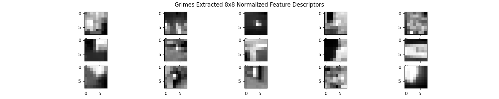
8x8 Extracted Feature Descriptors from Grimes image
Campanile Feature Descriptors
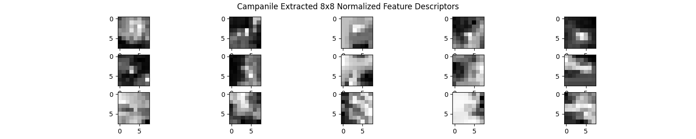
8x8 Extracted Feature Descriptors from Campanile image
WTC Feature Descriptors

8x8 Extracted Feature Descriptors from WTC image